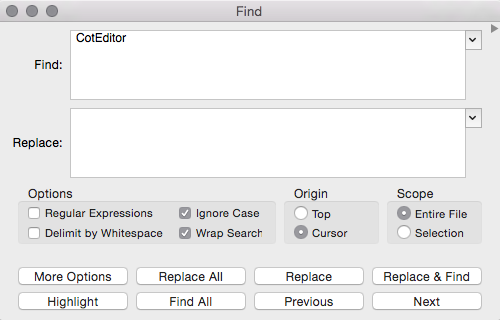
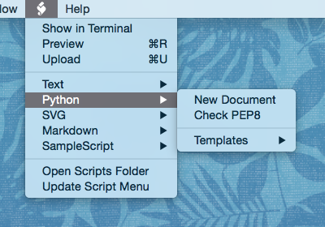

Discover CotEditor
CotEditor is a Cocoa text editor designed for editing plain text files such as web pages (HTML), program source codes (Perl, Python, etc.), or TeX sources. CotEditor offers a lot of useful features that are not available in OS X's TextEdit. You'll find some of them below.
Powerful find and replace
CotEditor has a very powerful find and replace using OgreKit [website].
In addition to the support for regular expression search, you can display a list of search results, or highlight matched words in your document.
Syntax coloring
 CotEditor can colorize particular strings such as reserved words of programming languages, TeX commands, and HTML elements.
CotEditor can colorize particular strings such as reserved words of programming languages, TeX commands, and HTML elements.
Coloring rules for major programming languages are built in by default, and you can add or customize styles as you like. You can also define the strings to be colored by regular expression patterns, not only by words.
Outline menu
 CotEditor's Outline Menu extracts predefined keywords from the document and displays them in a drop-down menu. By clicking on a listed item, you can go directly to the corresponding part of your document.
CotEditor's Outline Menu extracts predefined keywords from the document and displays them in a drop-down menu. By clicking on a listed item, you can go directly to the corresponding part of your document.
You can set what items should appear and how they should be titled in the menu by customizing the corresponding syntax style.
Word completion
 Word completion assists you to input words faster, such as when typing reserved words of programming languages or HTML elements.
Word completion assists you to input words faster, such as when typing reserved words of programming languages or HTML elements.
If you press the ESC or F5 key after typing the first few letters of a word, a list of possible completions shows up. You only need to select the one you want to input from the list. The range of completions can be expanded or limited.
Script menu
The Script menu lets you run scripts to manipulate your document or launch external programs.
You can use AppleScript scripts, Perl, PHP, Python, and UNIX shell scripts as well.
Other features
- Comment-out/Uncomment
- CotEditor can comment-out/uncomment seleted text with corresponded comment delimiters.
- File Drop
- File Drop lets you insert a specified string when you drop a file onto your document window. For example, you can insert the IMG tag into your HTML document by dropping an image file on it.
- Key bindings
- CotEditor's original key bindings are fully customizable.
- AppleScript compatible
- AppleScript can automate your workflow. You can call your scripts via the Script menu.
- Support for the External Editor Protocol
- CotEditor supports the External Editor Protocol in order to act as an external editor for applications implementing this protocol such as Cyberduck [website], Interarchy [website] or MarsEdit [website]. In those applications you can choose CotEditor to edit a file on a server.
- Line numbers
- CotEditor can display line numbers. This is useful such as when you develop and debug programs.
- Window transparency
- You can change a window's transparency. When you have many documents opened, this will help you find the one you need.
- Line spacing
- You can set space between lines as you see fit.
- Character inspector
- You can get your character's information like unicode character name or unicode code quickly.
- Incompatible characters
- There are some characters you cannot save with a particular encoding. This feature enables you to check if those characters are included in your document.
- Split view
- You can split a single window into multiple panes to view different parts of your document at the same time.
- Vertical orientation
- CotEditor can layout text vertically.